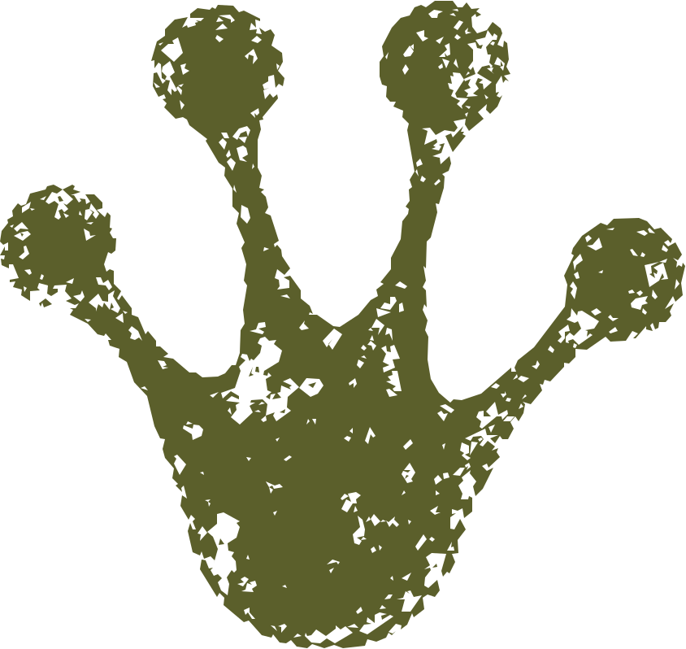

About Wandered & Found
Ordinary mailboxes deserve
extraordinary things.
Wandered & Found was created around a simple idea: opening the mailbox can still feel a little magical.
Instead of another bill, advertisement, or brown box, imagine finding an envelope from somewhere called The Pond—and inside, a story waiting to be opened.
What Wandered & Found is
A story you can hold.
Each month, Wandered & Found brings together storytelling, original artwork, and small tangible discoveries in a correspondence delivered by post.
The adventure unfolds through Tad P. Muddleton III, a curious frog who lives around The Pond and has developed the rather persistent habit of writing things down.

Correspondent · Explorer · Frog
Tad P. Muddleton III
Exactly what the “P.” stands for is a matter Tad has chosen not to discuss.
What we do know is that Tad wanders. He notices things. He asks questions. And when something interesting happens around The Pond, he believes someone ought to hear about it.
Fortunately, he owns a typewriter.
Why physical mail?
Some adventures shouldn't arrive on a screen.
There's something different about holding a letter, unfolding a piece of artwork, finding something tucked behind the page, and realizing that someone prepared it for you.
Wandered & Found is meant to be opened slowly, kept if you wish, and discovered away from the scroll of everyday life.
Wander a little. Collect the moments.
See what you discover.
A note about The Pond
The Pond is bigger than it first appears.
There are paths Tad hasn't followed, places he hasn't visited, and neighbors you haven't met yet.
They'll introduce themselves when the time is right.Correspondence From The Pond